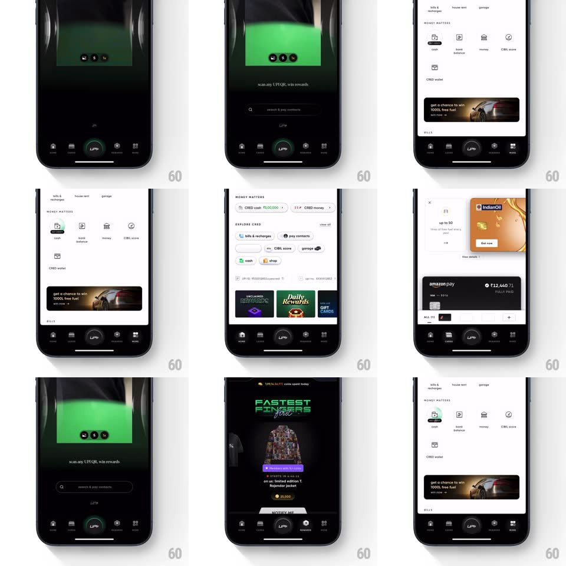

Media
Frame-by-frame

Rebuild this animation 1:1: CRED's tab bar micro-interactions - selecting a bottom tab fires a springy 3D-style animation on its icon as the screen changes.

Rebuild this animation 1:1: CRED's tab bar micro-interactions - selecting a bottom tab fires a springy 3D-style animation on its icon as the screen changes. ## Integration Integration: stack-agnostic spec - springs given as stiffness/damping, timed motions as duration + curve; map every value to your framework and animation library of choice. ## Scene Dark CRED app with a bottom tab bar (home, cards, the central UPI circle, rewards, more) over screens like Money Matters, the UPI scanner, and Fastest Fingers rewards. ## Motion spec Pattern: tab-select icon animation, ~450ms. - Tap: the selected icon pops (scale 1 -> 1.25 -> 1, spring ~420/16) with a quick flip on its vertical axis (rotateY 0 -> 180deg halfway and back, 350ms, ease-in-out) so it reads as a 3D coin-turn. - Fill: the icon's active state paints in mid-flip (when edge-on, ~150ms in) - the swap is hidden by the rotation. - The unselected icon returns to rest with a small settle (scale 1.05 -> 1, spring ~400/20). - Screen: the destination view crossfades (200ms) under the icon animation - the icon motion leads, the content follows. - The center UPI button only scales (1 -> 1.12 -> 1); it does not flip. ## Calibration - The face swap happens exactly at the edge-on midpoint. - Icon animation and screen change overlap - never sequential. ## Reduced motion Simple icon state swap with a 100ms fade. ## Don't miss - Every tab icon has its own glyph but the same flip-and-pop timing. - The center button's treatment differs from the tabs - keep that split.